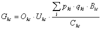
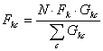
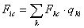

Assuming that there are N cells representing water areas, each fleet k can cause a total fishing mortality rate N · Fk. For each step in the simulation this rate is distributed among cells, c, in proportion to the weights Gkc based on:

Eq. 68where Okc is 1 if cell c is open to fishing by fleet k, and 0 if not; Ukc is 1 if the user has allowed fleet k to work in the habitat type to which cell c belongs, and 0 if not; pki is the relative price fleet k receives for group i fish, qki is the catchability of group i by fleet k (equal to the Fki in the Ecopath model); Bic is the biomass of group i in cell c; and Ckc is the cost for fleet k to operate in cell c. Based on the weights in Equation 68 the total mortality rate is distributed over cells according to

Eq. 69while each group in the cell is subject to the total fishing mortality

Eq. 70